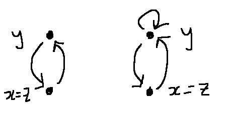

In this video, we'll look at the five basic relation properties, including how to apply them in special situations.
A relation is defined on a base set. This could be a large set like the real numbers. The examples in this video will use small finite base sets. In this class, we'll assume that the base set is not empty (i.e. has something in it).
Here's a picture of relation R on the set {1,2,3,4}. The arrows show which (ordered) pairs of elements are related. I've added arrows more-or-less at random. E.g. 3 and 4 are related to themselves but 1 and 2 aren't. This is still a legitimate mathematical relation, but one that doesn't have many useful properties.
Here is the "divides but not equal" relation on the set B={2,3,4, 6, 12} Notice that the relation has a more uniform structure. For example, none of the elements has a self-loop. There are no pairs of values connected in both directions. The five basic relation properties will help us make that intuition precise, by calling out specific patterns of behavior.
Here are the formal definitions for "reflexive" and "irreflexive". (Notice the slash through the relation symbol in the definition of irreflexive.)
Defn: A relation R on a base set A is reflexive iff for every \(x\in A\), \(xRx\).
Defn: A relation R on a base set A is irreflexive iff for every \(x\in A\), \(x \not R x\).
In pictures, every node (i.e. element in the base set) in a reflexive relation has a self loop (left). Every node in an irreflexive relation does not have a self loop (right).
The main gotcha with reflexive and irreflexive is that there is an intermediate possibility: a relation in which some nodes have self-loops and some don't. Such a relation is not reflexive and also not irreflexive. So the two properties are not opposites.
Here's the definition of "symmetric."
Defn: A relation R on a base set A is symmetric iff for every \(x,y\in A\), if \(xRy\), then \(yRx\).
This definition says that if we have an arrow in one direction, there must also be a reverse arrow. So we can't have an arrow in only one direction. However, it's ok to have no arrows between a pair of nodes. The definition contains an if/then statement whose hypothesis is false in that situation, so the if/then statement is vacuously true.
Here's a picture of a relation that's symmetric (but not reflexive or irreflexive).
A relation is antisymmetric if nodes are connected in only one direction, or perhaps not connected at all. So the local possibilities look like this:
It's very tempting to define it this way:
Buggy Defn: A relation R on a base set A is antisymmetric iff for every \(x,y\in A\), if \(xRy\), then \(y \not Rx\).
However, in mathematics, it's always possible that two variables with different names secretly have the same value. This is called "aliasing" when it happens in computer programs. Let's try substituting \(x=y\) into the above definition:
for every \(x \in A\), if \(xRx\), then \(x \not Rx\).
So this definition would have an unintended consequence: an antisymmetric relation could never be reflexive. So let's restrict our definition of antisymmetric to talk only about a pair of base values that are distinct from one another:
Defn: A relation R on a base set A is antisymmetric iff for every \(x,y\in A\), if \(xRy\) and \(x \not = y\), then \(y \not Rx\).
As with reflexive and irreflexive, there are relations that are neither symmetry nor antisymmetric, because they have a mixture of the two configurations:
Because of vacuous truth, we have a fourth possibility. The relation below is both symmetric and antisymmetric. The if/then statements in both definitions are true because there no pair of distinct base values connected by an arrow.
Proofs of antisymmetry typically use a different, equivalent definition:
Original Defn: A relation R on a base set A is antisymmetric iff for every \(x,y\in A\), if \(xRy\) and \(x \not = y\), then \(y \not Rx\).
Alternate Defn: A relation R on a base set A is antisymmetric iff for every \(x,y\in A\), if \(xRy\) and \(y Rx\), then \(x = y\).
You can get between the two forms using a series of logical transformations. The critical step is converting a statement into its contrapositive.
if \(xRy\) and \(x \not = y\), then \(y \not Rx\)
if \(xRy\), then (if \(x \not = y\), then \(y \not Rx)\)
if \(xRy\), then (if \(y Rx\), then x = y) <-- contrapositive
if \(xRy\) and \(y Rx\), then x = y
You can paraphrase this new form as "the only way for x and y to be related in both directions is for x and y to be secretly the same value."
You've seen transitivity before, in the special case of order relations (e.g. \(\le\)) on the real numbers. Here's the general definition for any relation R:
Defn: A relation R on a base set A is transitive iff for every \(x,y,z\in A\), if \(xRy\) and \(y R z\), then \(x R z\).
Suppose that we have two arrows that connect end to end. In that case, we must have a "shortcut" arrow that goes directly from the first value to the last one:
So the situation on the left below is clearly good and the one on the right is bad:
However, notice that the condition in the hypothesis (\(xRy\) and \(y R z\)) is very specific. When we have any other configuration of arrows, the if/then statement is vacuously true. So all of the following local situations are consistent with the relation being transitive:
There are a lot of ways to be transitive, but only one local configuration that makes a relation not transitive. So if you're trying to decide whether a relation is transitive, it's best to look for local evidence that it's not transitive.
Look at the two local configurations below? Are they consistent with the relation being transitive?
These are actually violations of transitivity, because of aliasing. To see this, we need to set x=z in our definition of transitive:
for every \(x,y\in A\), if \(xRy\) and \(y R x\), then \(x R x\)

So if we have arrows connecting two nodes in both directions, transitivity requires a self-loop on both nodes.
Certain combinations of relation properties are particularly useful. A relation is a "partial order" if it is reflexive, antisymmetric, and transitive. Partial orders are a bit like the normal \(\le\) ordering on the real numbers, but somewhat looser. This will make the most sense if we look at an example.
Suppose that we are representing character properties in a video game. We'd like to give each character a triple of values (charm, strength, health). Traditionally, each of these is an integer between 0 and 10. So if we set \( V = \{0, 1, \ldots, 10\}\) then the set of triples will be \(T = V^3\).
Now, let's define an order \(\preceq \) on \(T\) that tells us when one character's status is better than another's:
\((a,b,c) \preceq (x,y,z)\) iff \(a\le x\), \(b \le y\), and \(c\le z\)
Here's a little piece of the relation:
Notice that (10,8,6) is definitely better than (2,8,5), (2,4,3), and (10,6,5). However, our definition doesn't state whether (2,8,5) is better or worse than (10,6,5). And that's what we want for our application, because it's genuinely not clear whether extra charm is better than extra strength. These missing relationships are what makes this a "partial" order, as compared to a "total" or "linear" order like \( \le\) on the real numbers.
This relation is obviously reflexive. In the next video, we'll prove that this relation is also antisymmetric and transitive.
Another particularly useful pattern of relation properties is reflexive, symmetric, and transitive. Relations with these three properties are called "equivalence relations."
For example, consider musical chords. Here are standard C and D chords.
But there are other possible C and D chords, e.g. we can choose to replace the low C or D with the similar note an octave higher, as shown below. There are subtle differences, but a beginning guitar player doesn't care about them.
We can define a "beginning guitar" equivalence relation by saying that two chords are "equivalent" if they contain the same named notes. E.g. any chord containing D, F# and A is a "D chord" regardless of whether I choose to make it using a high D or a low D. Then, when we write out our music, we can just write "D" and let the player choose some appropriate fingering. We've lost some detail, but the notation is very compact and easy to read.
This is an example of the main application for equivalence relations: making new objects fusing together a number of equivalent objects. It's the same thing that we did in modular arithmetic. When we set the base to be 7, we made 5, -2, and 12 equivalent. We then fused them together into a modular number [5]=[-2]=[12].